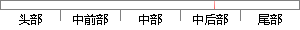

图4-14 switch_task()函数主要代码
片段位置图

相似结果
相似片段：[图文]实例的电路原理图及程序源代码可以到资源下载栏目下载...5.4.2 floor函数应用实例5.4.3 modf函数应用实例...7.4.1 0os_switch_task函数7.4.1 1os_wait函数...
| 标题 | 《回至51单片机应用开发案例手册 (平装)》 |
| 对比库 | PaperRater云论文库 |
| 网址 | http://www.amazon.cn/gp/aw/d/B006J9MSGK |
| 相似率 | 71.43% （轻度抄袭） |
※ 片段修改建议 ※
近似词参考：- 主要：首要 重要
系统自动生成语句：图4-14 switch_task()函数首要代码
注：本片段修改建议为系统自动生成，仅供参考。